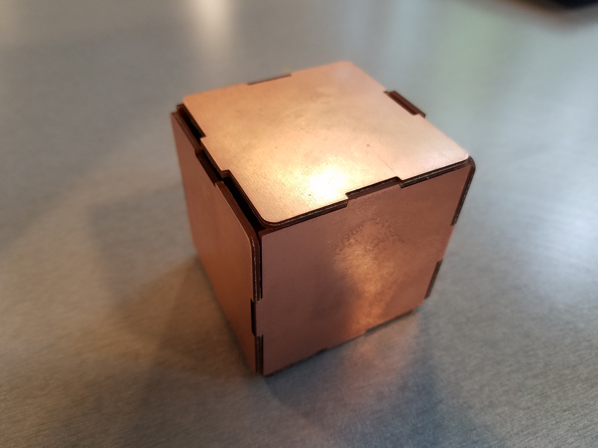
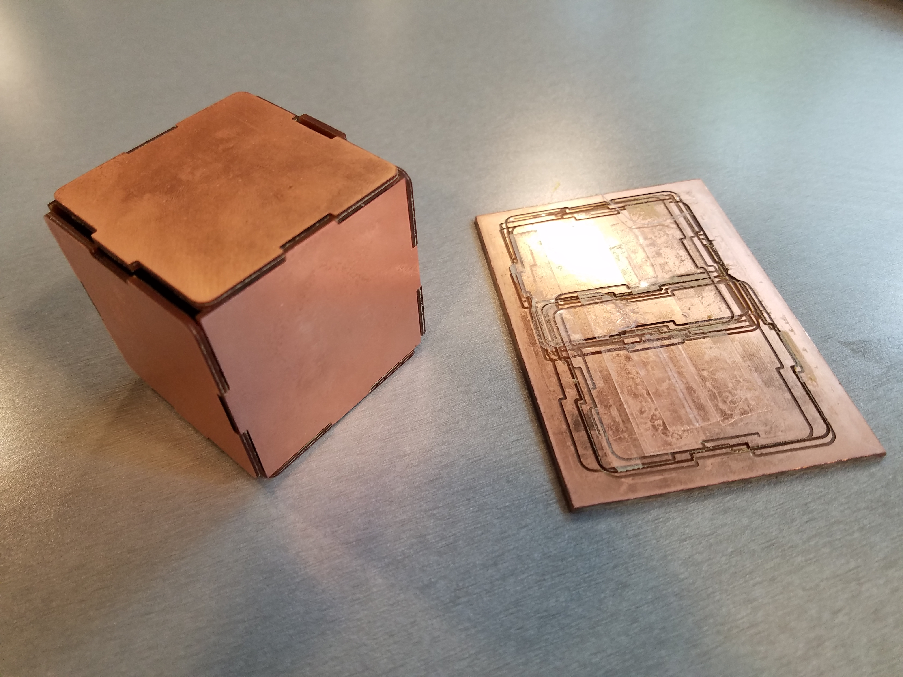
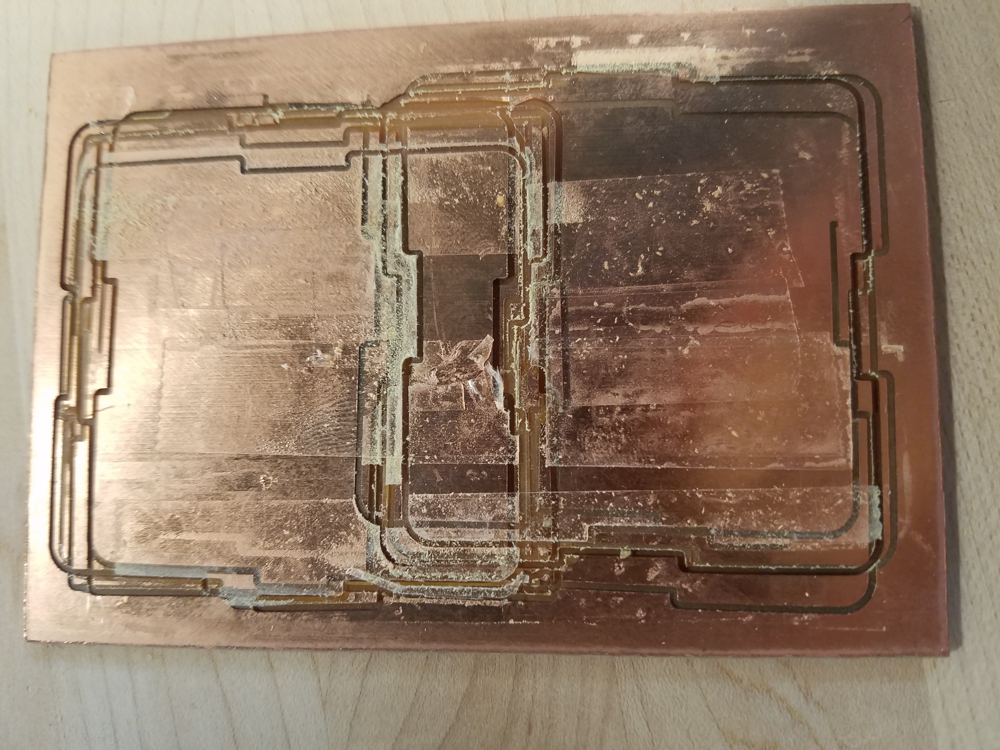
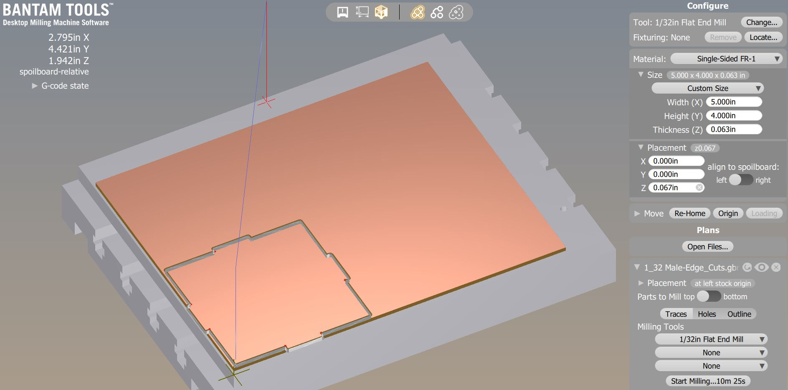
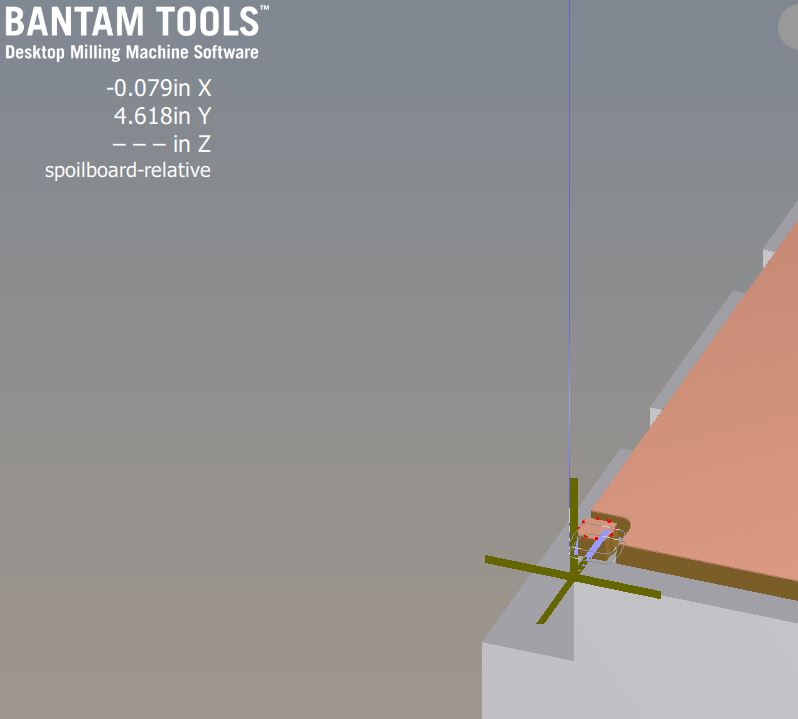
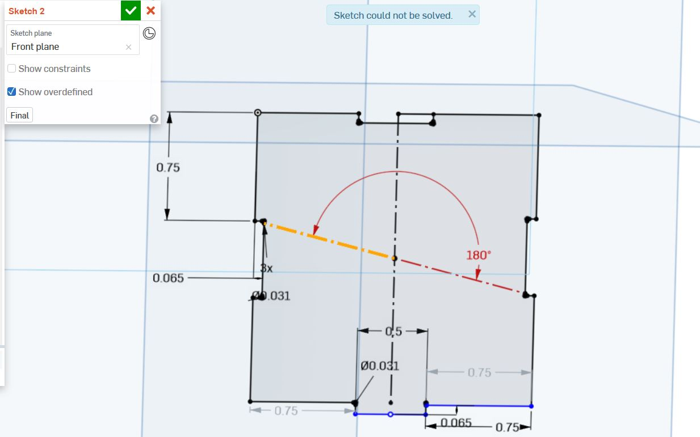
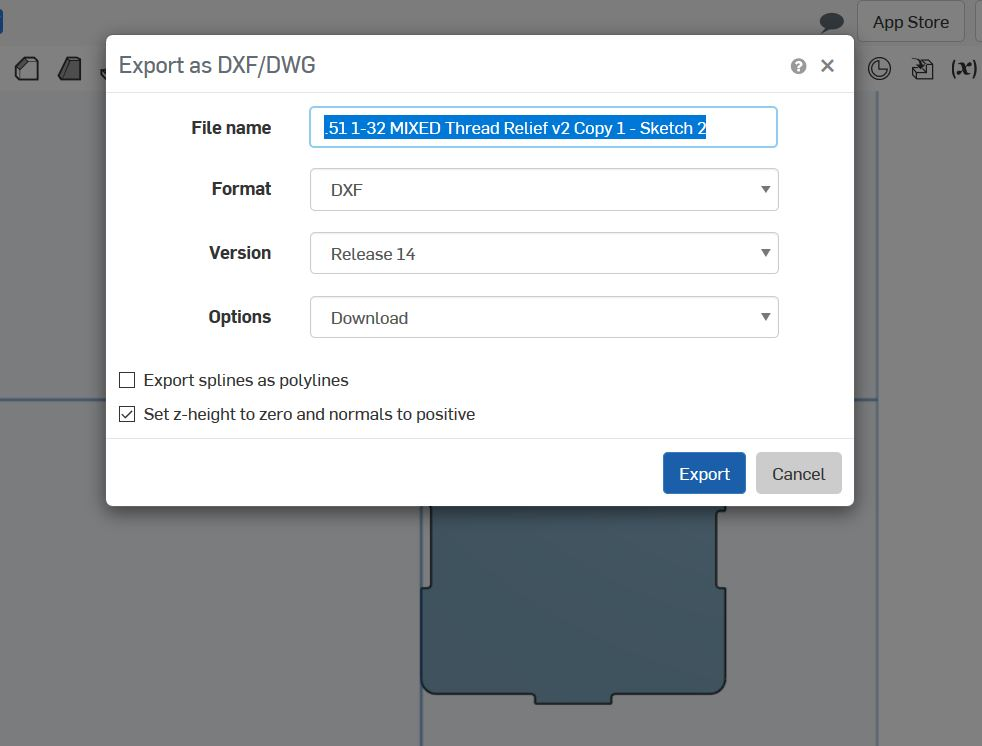

Lukas' Assignment 5: CNC BOX!
Overview:

Synthesis / Define
Design prompt criteria:Ideation / Develop
For this weeks project, I decided I wanted to keep it simple by focusing on learning the tooling system.
In order to keep it simple, I built a press fit box with a joining method milled out of FR1 on the Othermill.

Test / Implementation / Deliver
As per usual with Digital Fabrication, tweaking the models and the output is a necesarey portion of the process.
In the end, I used all 15 of my FR-1 boards to test.
To determine the design I explored the wiggle room required for a press fit.
I kept struggling with the press fit portion so I tried variations of extending the width of the females by a slightly larger amount.
In hindsight, the fluctuating size of the FR1 board ranged from .055 to .07 which was disruptive to my precision.

 
Problem:
As a result of adjusting the parameters, I introduced a few errors into the sketch.
After cutting out all sides I realized that had made the mistake of shaving off to much.
My male finger joint ends were. 05 inches wide. So I made my females. 053 wide which worked for 2 of the 4 pieces cut.
The two pieces fly right off during the shake test.
I went back to the drawing board and cut the finger joint pieces such that they are .052, .051, and .0525 wide.



Solution:
However after recutting the female finger joint pieces of .051 and .052 did not fit at all.
The Female piece that ended up with the best press fit was .0525" wide for a .05" male piece.
Additionally i corrected some of the model dimensions and constraints that were "off" from one another by a hundredth of inch which helped the piece be more flush with one another.
The video below demonstrates the updated cube could pass the shake test!
Reflection
In hindsight, my joints were to simple compared to the advanced techniques.
However teaching others is an extremely helpful way to learn and I managed to onboard 6+ people to the tooling process which in turn aided myself in becoming extremely familiar with the machines and settings.
Attribution:
Joshua, Angel, Dhwani Vekaria, Julie Do, Huan Lu, helped each other out with best practices.
Machine Settings:
